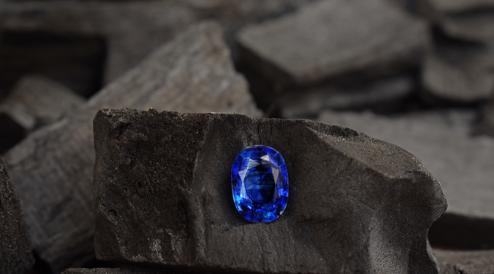
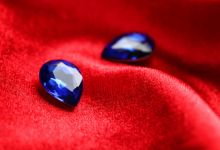
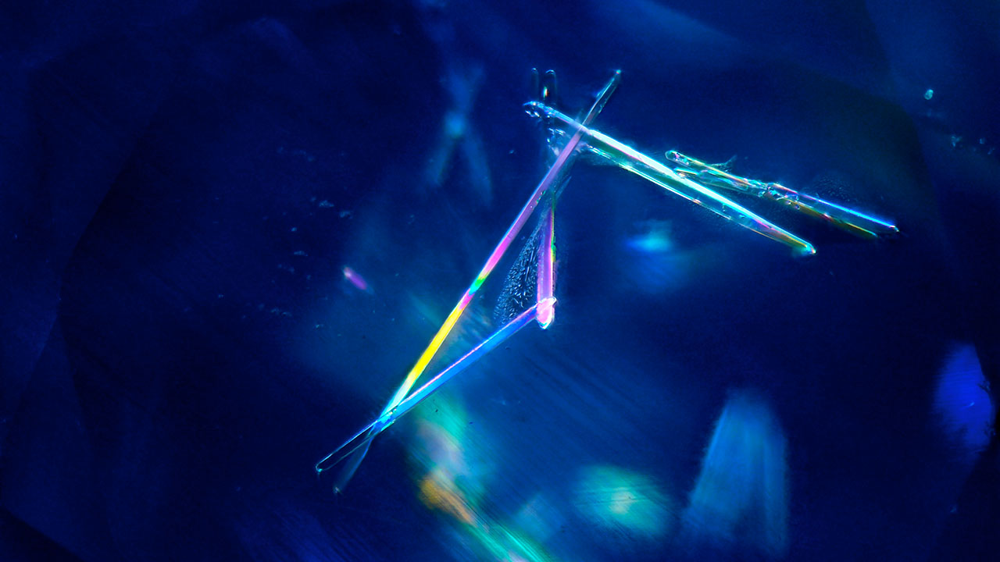
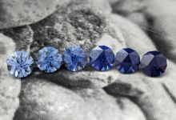
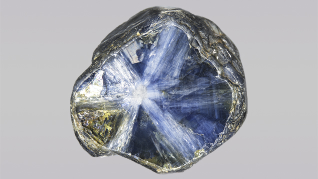

Sapphires
- Home
- Sapphires
Introduction to Sapphires
Sapphires, renowned for their stunning colors and exceptional durability, are among the most cherished gemstones in the world. As a gem-quality member of the corundum family, sapphires are the September birthstone and rank second only to diamonds in hardness. While blue sapphires are the most iconic, these gems come in every color of the rainbow except red (red corundum is classified as ruby). At Donai Gems, we offer a curated selection of sapphires, showcasing their versatility and elegance for jewelry enthusiasts and collectors.

The Value of Sapphires
Key Factors Affecting Sapphire Value
-
Color :The primary driver of sapphire value, especially for blue sapphires. The ideal blue is a pure, vivid hue with strong saturation and a medium to medium-dark tone. Kashmir sapphires, with their velvety, slightly purplish-blue color, command the highest prices, sometimes exceeding $200,000 per carat. Other unheated, pure blue sapphires typically range from $2,000 to $10,000 per carat, depending on size.
-
Fancy Colors :Pink and pink-orange padparadscha sapphires are highly prized after blue, with padparadscha’s unique “lotus flower” hue (orange-pink to pinkish-orange) fetching premium prices.
-
Clarity : Sapphires with minimal inclusions are more valuable, though some inclusions, like fine silk in Kashmir sapphires, enhance their appeal by creating a velvety texture.
-
Size :Larger sapphires, especially those with vivid color and high clarity, command significantly higher per-carat prices.
-
Origin :Kashmir sapphires are the most valuable, followed by those from Myanmar, Sri Lanka, and Montana’s Yogo Gulch. Origin significantly impacts price due to unique characteristics like color and inclusions.
Pricing Insights
Kashmir Sapphires
Rare and exhausted, these can exceed $200,000 per carat for top-quality stones due to their velvety texture and fine silk inclusions.
Myanmar Sapphires
Slightly violet-blue, highly saturated, priced at $2,000–$10,000 per carat for fine specimens.
Sri Lankan Sapphires
Light to medium-tone, slightly grayish to violetish-blue, more affordable but still high-quality.
Padparadscha Sapphires
Rare and highly sought-after, with prices rivaling top blue sapphires for vivid orange-pink hues.
Montana Sapphires
Yogo Gulch stones are prized for their vivid color, but most are small (rarely over 1 carat), making larger stones exceptionally valuable.
Sapphire Characteristics
What Makes a Sapphire?
Sapphires are corundum gemstones (aluminum oxide, Al₂O₃) colored by trace elements:
-
Blue : Iron and titanium.
-
Pink, Yellow, Green, etc : Chromium, iron, or other elements.
-
Color-Change Sapphires : Vanadium causes a shift in color under different lighting (e.g., violet-blue in daylight, deep purple in incandescent light).
-
Padparadscha : A rare blend of chromium and iron creates the coveted pinkish-orange to orange-pink hue.
All red corundum is classified as ruby, while all other colors are sapphires, collectively called “fancy sapphires” when not blue.
Inclusions and Unique Features

Silk Inclusions
Kashmir sapphires are distinguished by fine, velvety silk inclusions that scatter light, creating a soft glow. Patterns include “leather,” “comet tails,” and “snowflakes.”

Zircon Inclusions
Unique to Kashmir sapphires, elongated zircon crystals with streamers are a key identifier.

Color Zoning
Extreme color zoning, with colorless bands between blue, is common in Kashmir sapphires.

Star Sapphires
Rutile inclusions in a hexagonal matrix create a six-rayed star effect when cut as cabochons.

Trapiche Sapphires
Rare sapphires with carbonaceous inclusions forming a “spoked wheel” pattern, highlighted by cabochon or slice cuts.
Luminescence
Sapphire fluorescence varies by origin and treatment:
-
Natural Blue Sapphires : Typically inert under UV light, but:
- Sri Lankan: Red to orange in longwave (LW), light blue in shortwave (SW).
- Thai: Weak greenish-white in SW.
- African: Moderate to strong orange in SW.
- Heat-treated: Chalky green in SW.
-
Fancy Sapphires :
- Pink: Strong orange-red in LW, weaker in SW.
- Yellow (Sri Lankan): Distinctive apricot in LW, weak yellow-orange in SW.
- Color-Change: Inert to strong red in LW, moderate red to orange in SW.
- Green, Black, Brown: Usually inert or weak red.
-
Synthetic Sapphires : Often show chalky blue to yellow-green (blue), red or orange-red (pink), or mottled blue (color-change) fluorescence, aiding identification.
Absorption Spectrum
Sapphires exhibit a distinctive ferric iron spectrum with lines at 4710, 4600, and 4500 (the “4500 complex”) in blue-green gems. Sri Lankan sapphires may show a 6935 red fluorescent line. Synthetic sapphires may have a faint 4500 line or a 4740 line in color-change varieties, helping gemologists distinguish them.
Major Sources of Sapphires
Sapphires are mined globally, with key gem-quality sources including:
-
Kashmir : The gold standard for blue sapphires, with velvety, slightly purplish-blue stones. Sources are now exhausted, making these gems extremely rare.
-
Sri Lanka : Produces sapphires in all colors, with light to medium-tone, slightly grayish to violetish-blue hues. A major source for blue and fancy sapphires.
-
Myanmar : Known for highly saturated, slightly violet-blue sapphires with medium to medium-dark tones.
-
Thailand : Abundant dark blue sapphires, often dichroic with a greenish tint if not cut properly.
-
Montana, USA : Yogo Gulch yields vivid, small sapphires (rarely over 1 carat), while other areas produce “steely” (grayish) stones in various colors.
-
Australia : Dark-colored sapphires, with some fine yellow and green parti-colored gems.
-
Tanzania : Produces blue and fancy-colored sapphires, including rare trapiche varieties.
Synthetic Sapphires and Simulants
Synthetic Sapphires
Synthetic sapphires, grown via flame fusion, Czochralski, flux, or hydrothermal methods, mimic natural stones closely. They often have curved striae (not found in natural sapphires) and different fluorescence (e.g., chalky blue in SW for blue synthetics). At Donai Gems, we use advanced testing to ensure authenticity.
Simulants
Common simulants include glass, cubic zirconia (CZ), and plastic, which mimic blue, pink, or padparadscha sapphires but differ in hardness and optical properties. Misleading trade names like “Oriental Topaz” (yellow sapphire), “Oriental Emerald” (green sapphire), or “Oriental Amethyst” (purple sapphire) may be used, but our gemologists ensure accurate identification.
Sapphire Enhancements
Most sapphires are heat-treated to enhance color and clarity. Sri Lankan geuda sapphires, once milky, can turn vivid blue, yellow, or orange with heat treatment. Other treatments include diffusion and fracture filling. At Donai Gems, we disclose all treatments to ensure transparency.
Notable Sapphires
Sapphires are known for their impressive sizes and historical significance:
-
Logan Sapphire : 423 carats, blue, Sri Lanka, Smithsonian Institution.
-
Star of India : 536 carats, blue star sapphire, American Museum of Natural History.
-
Black Star of Queensland : 733 carats, world’s largest black star sapphire, private collection.
-
Raspoli Sapphire : 135 carats, brown, Natural History Museum, Paris.
-
Bismarck Sapphire : 98.6 carats, deep blue, Smithsonian Institution.
Caring for Your Sapphire Jewelry
Sapphires’ exceptional hardness (9 on the Mohs scale) and lack of cleavage make them ideal for everyday jewelry, including rings, pendants, and earrings. However:
-
Cleaning : For untreated or minimally included sapphires, mechanical cleaning (ultrasonic or steam) is safe. Avoid ultrasonic cleaning for oil-treated or heavily included stones. Use warm water, mild detergent, and a soft brush, or consult a professional jeweler.
-
Storage : Store sapphires separately to avoid scratching softer gems. Protective settings, like halo designs, enhance durability in rings.
Why Choose Sapphires from Donai Gems?
At Donai Gems, we source sapphires from premier locations like Kashmir, Sri Lanka, Myanmar, and Montana, ensuring exceptional quality and authenticity. Our collection includes vivid blue sapphires, rare padparadscha, and stunning star and trapiche varieties. Each stone is carefully selected for its color, clarity, and origin, with full transparency about treatments. Whether you’re seeking a classic blue sapphire ring or a unique fancy-colored pendant, Donai Gems offers gems that embody elegance and durability.
Explore our collection at www.donaigems.com and discover the timeless allure of sapphires. Contact our expert gemologists for personalized guidance today.